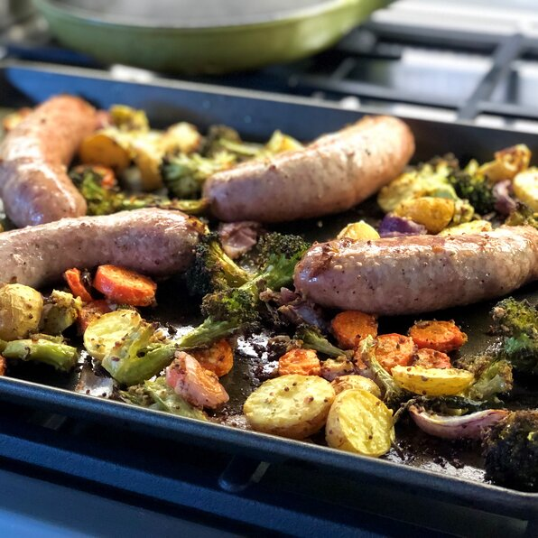

Sausages and Vegetables Sheet Pan Dinner

Some awesome Sausages!
This is an ancient recipe from my family. My grandmother created it 50 years ago.
It's fairly easy to cook, and have not so much ingredientes required.
Ingredents:
- 20 medium size sausages
- 1 litre of water
- 3 carrots
- 4 zucchinis
- 1 cup of cream
- 200 grams of butter
Steps:
- Clean and cut the carrots into tiny cubes.
- Clean and cut the zuchinis into small-medium sized cubes.
- Put all together the carrots, zucchinis, butter and cream. Reserve.
- Heat the water until boiling start and put the sausages in.
- Lastly add the reserved items to the water with the sausages.
- Cook for about 25 minutes.